Sensitivity Analysis for Case Study:
World Food Program
Students may work in groups of up to three people. You can change groups from Part 1 if you want. You may consult your textbooks, your notes, online information, the TA, and me. You may not solicit help from other sources.
Due: Tuesday November 16, 2021. (30 points. Questions 1–2 are worth 3 points each; Questions 3–8 are worth 4 points each.)
The solution found in Part 1 depends on the precise values of various parameters. Use sensitivity analysis to answer the following questions. Include printouts of relevant parts of your AMPL output. Assume that each part is independent of the others. Procedures for obtaining shadow prices and other relevant information are given below.
If you prefer to use them, my model file is available on LMS and the course website. The solution to the LP relaxation has value 0.9547767264. If your model returns a different value or the first 6 significant digits, or if your model is nonlinear, you need to either modify your model so it does give this value, or use my model.
Notes: (1) You may want to solve a modified problem to check your answer for Questions 1–4, or to try to determine where to look for sensitivity information. That is OK, but I don’t want to see those results! You must give me the information using only sensitivity analysis. (2) AMPL might give a dual variable or reduced cost of the opposite sign from what you expect. That’s OK, you can just use the sign you’d expect.
Solution:
The shadow price for the constraint obeycostUB is 2.1938e - 05:
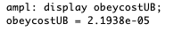
So the estimate in the change in NVS for an increase of $1,000 in spending is 2.1938e - 02.
Solution:
The nonzero shadow prices for the constraint capacity are as follows:
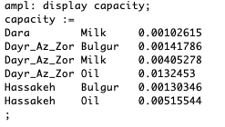
So the estimate in the change in NVS for an increase of 0.1 in the availability of milk at Dara is 0.000102615.
The shadow price for oil at Dara is 0, so the estimate for the change in the objective value is also 0. Note that the constraint is not tight and has a positive slack:
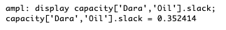
From looking at reduced costs, determine how large α has to be to encourage the consumption of Vitamin C in Hassakeh.
(Note: If you use a constraint to limit the shortfall instead of explicitly defining a variable, then you should be able to use the dual variable for that constraint. You may need to scale the dual variable, depending on the exact structure.)
Solution:
The reduced costs for the shortfall variables are as follows:
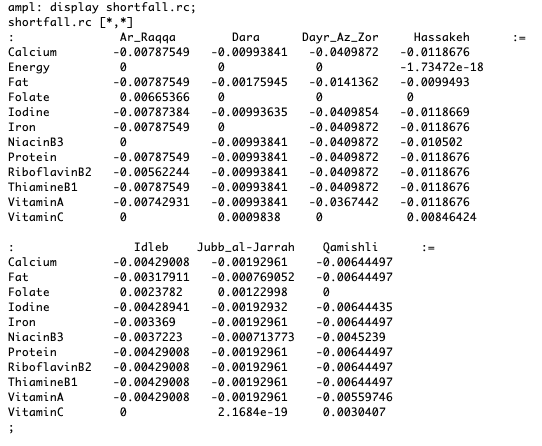
shortfall[’VitaminC’,’Hassakeh’] is at its upper bound, with a positive reduced cost in a maximization problem. If we change the reduced cost to be negative then more of this nutrient may be consumed. Changing the contribution to the original objective by an amount α also changes the reduced cost by α, so we choose α = 0.00846424.
which is satisfied by optimal solutions to the standard primal-dual pair. Recall also that the reduced costs are equal to the dual slacks.)
Solution:
The reduced costs for the purchasecost variables are as follows:
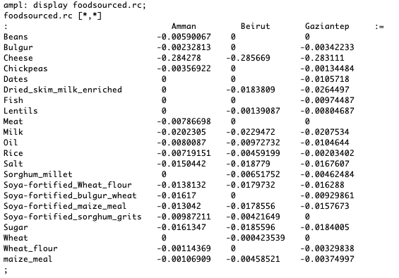
shortfall[’Milk’,’Amman’] has the least negative bound, so it requires the smallest change in its reduced cost to become attractive, by changing the sign of the reduced cost.
The reduced cost is equal to the dual slack. Symbolically, we have
We cannot directly change the reduced cost, since it corresponds to the contribution to the NVS of the shortfall. What we can change are the entries in A corresponding to the purchase cost of milk.
The parameter purchasecost[’Milk’] appears in 3 constraints, only one of which is tight:
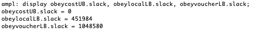
So changing the value of this parameter by β will change the reduced cost by β multiplied by the shadow price for the findcost constraint, given below:
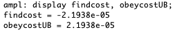
Hence we need to decrease the purchasecost by
So the purchase cost needs to drop to approximately $277.833.
Solution:
In both cases, the value is smaller than predicted in Question 1 because the basis must have changed. The prediction is closer in the $28,100 case than the $29,000 case. For details, see the screengrab below.
It can be checked that the prediction would have been accurate for a budget of $28,001, but would already have been slightly too high for a budget of $28,010.
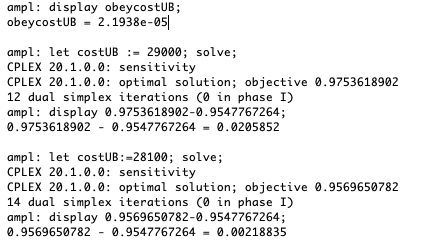
Now use the command let capmarket[’Dara’,’Milk’]:=3; and solve. Is the change in objective function value larger or smaller than 10 times your predicted change in Question 2? Why?
Solution:
With let capmarket[’Dara’,’Milk’]=2.1;, we get agreement with Question 2, because the basis has not changed. With let capmarket[’Dara’,’Milk’]=3;, the increase is smaller than predicted, due to the basis changing: one of the basic variables must have been driven to its bounds.. For details, see the screengrab below.
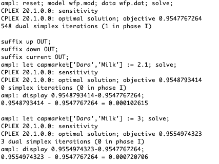
With the original data, sensitivity analysis tells us that once capmarket[’Dara’,’Milk’] increases above about 2.175, the basis changes:
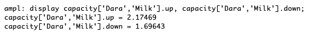
Solution:
We see from the screengrab below that no milk is purchased if we let purchasecost[’Milk’]:=278, but it is purchased at Amman if we let purchasecost[’Milk’]:=277
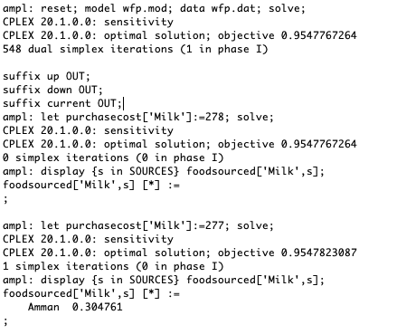
Solution:
We introduce 2 parameters into the model file to capture possible modifications to the objective:
Note that we choose default values of 0, so we don’t need to modify the data file. Instead, we can use let commands to selectively choose values for a small number of the extra parameters.
We also modify the objective function:
The parameter α in Question 3 is equal to NVSsf[’VitaminC’,’Hassakeh’]. We see in the screengrab below that setting α = 0.00846 still results in a shortfall of 0.25, but choosing the slightly larger value of α = 0.00847 leads to a slightly smaller shortfall.
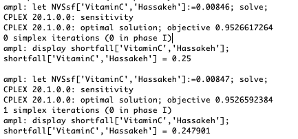
Note that the objective function value changes in both cases. In both cases, the change is α × 0.25, see the screengrab below. (In the second case, it is very slightly smaller, but this may be roundoff error.)
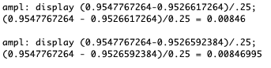
| John Mitchell |
| Amos Eaton 325 |
| x6915. |
| mitchj at rpi dot edu |
| Monday 1–2pm, Thursday, 2pm–3pm, webex: |
| https://rensselaer.webex.com/meet/mitchj |
| TA: She’ifa Punla-Green, punlas at rpi dot edu. |
| Office hours Tuesday 10–11.30am on webex: |
| https://rensselaer.webex.com/meet/punlas |